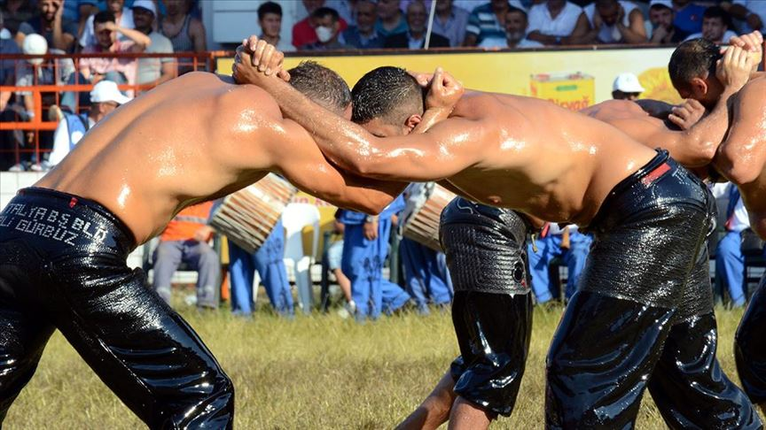

Edirne'nin Sarayiçi mevkiinde düzenlenen Kırkpınar Yağlı Güreşleri, dünyanın en eski kesintisiz devam eden spor organizasyonlarından biridir. 14. yüzyılda, Osmanlı'nın Rumeli'ye geçişi sırasında başlayan bu köklü gelenek, 600 yılı aşkın süredir her yıl büyük bir coşkuyla yaşatılmaktadır. UNESCO İnsanlığın Somut Olmayan Kültürel Mirası listesinde yer alan bu organizasyon, sadece bir spor müsabakası değil, aynı zamanda Türk kültürünün, centilmenliğin ve dayanıklılığın eşsiz bir sembolüdür.
Kırkpınar'ı özel kılan en önemli detaylar yüzyıllardır değişmeyen ritüelleridir. Pehlivanların giydiği manda veya dana derisinden yapılan özel don olan "kıspet", güreşin ritmini belirleyen ve efsanevi melodiler çalan davul-zurna ekibi ve pehlivanları manilerle er meydanına salan "cazgır", bu kültürün vazgeçilmez unsurlarıdır.
Güreşçilerin zeytinyağı ile yağlanması, hem rakibin kavramasını zorlaştırıp güce dayalı bir sporu taktik savaşına dönüştürür hem de cildi güneşten korur. Bu ulu meydanda zorlu rakiplerini alt ederek üç yıl üst üste başpehlivanlık unvanını kazanan yiğitler, Edirne'nin ebedi simgelerinden olan Altın Kemer'in sahibi olurlar.
"İki yiğit çıkmış meydane, ikisi de birbirinden merdane!"
| Yıl | Başpehlivan | Memleketi |
|---|---|---|
| 2025 | Orhan Okulu | Antalya |
| 2024 | Yusuf Can Zeybek | Antalya |
| 2023 | Yusuf Can Zeybek | Antalya |
| 2022 | Mustafa Taş | Sinop |
| 2021 | Ali Gürbüz | Antalya |